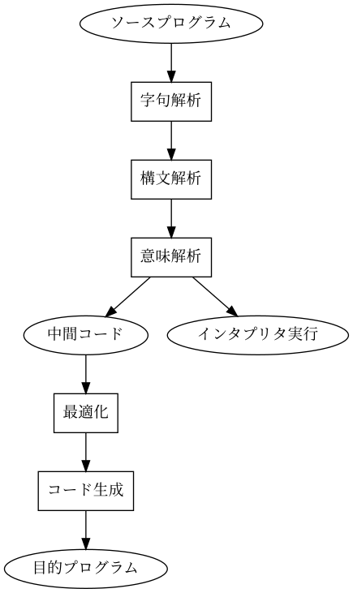
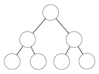
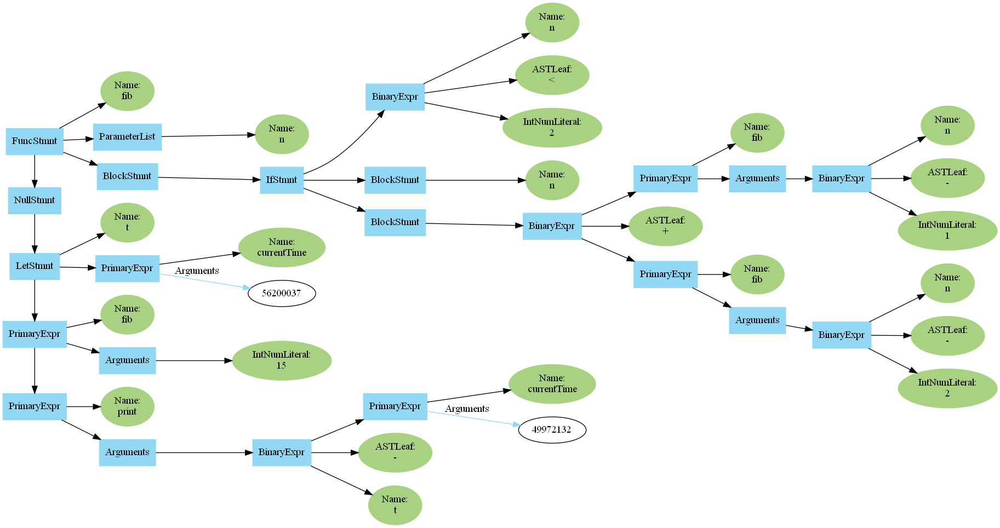

注意：素人なので専門用語等に関して不正確である可能性があります。ご了承下さい。
C, C++, C#, Java, Python, Julia, JavaScript, Rubyなど、プログラミング言語はたくさんある。 しかし、私達が書いたプログラムがどのようにコンピュータに実行されるのか疑問に思ったことはないだろうか。 私は疑問に感じたため、仕組みを知るために簡単なプログラミング言語を作ろうと思い立った。
というのは、プログラミング言語を作ってみようと思った表向きの理由で、もう一つ作った理由がある。 私は、中学生の頃シューティングゲームを作っていた。その時、ゲームのステージの設計をしていたのたが、ステージをコンパイル言語の中に書きコンパイルしてしまうと、少しの修正でも再コンパイルが必要になり面倒だった。そこで私はゲームのステージのデータを外部に保存し、それを読み込んで使おうと考えた。そこから試行錯誤が始まった。
先ず試したのは、単純なテキストデータに敵の位置や弾幕の種類を書いてそれを読み込むことだ。それでも良かったのだが、少し物足りないと感じた。 その時は敵の弾幕をメインプログラムの中に書いており、外部から読み込むテキストでは種類を指定するのみだった。 やはり、弾幕のデータも外部ファイルで指定し、弾の位置を計算させたいと思ったため、別のスクリプト言語と組み合わせてみようと思った。調べてみると、Luaというスクリプト言語がC++との相性がいいらしい。しかし、Luaの情報は少なく、思ったように動かすことはできなかった。 紆余曲折の末、自分でスクリプト言語を作ってみることにした。
この文化祭では、（シューティングゲームを作るのに飽きて、）スクリプト言語だけが出来上がったので、それを発表したい。
一般的な言語がコンピュータで実行される流れは大まかに以下の図の様になっている。 
途中で2手に別れているのは、コンパイラとインタプリタの差だ。 言うまでもなく左側のルートがコンパイラである。
コンパイラは、ソースコードを別の言語で書かれたプログラムに変換するソフトウェアだ。変換先の言語はコンピュータが直接実行できる機械語であることが多い。コンパイル形式の言語にはC言語やC++言語がある。 対して、インタプリタは、プログラムを実際に実行するソフトウェアだ。インタプリタ言語にはPythonやJavaScriptなどがある。
私が作ったのは、右のルートのインタプリタ形式のスクリプト言語だ。 コンパイル言語に比べるとパスが少ない分、楽に作れる。
はじめに、プロジェクト名を決めた。C言語に因んでShe言語と呼ぶことにした。 名前には特に意味はないが、コナン・ドイルのシャーロック・ホームズに関連している。詳しくは調べてほしい。 文法・構文等もC言語とはかけ離れている。
She言語の処理系を実装する言語としてC#を使った。 普通はC言語やC++言語を使うのかもしれないが、参考にした書籍（参考書籍[1]）がJavaを使用したオブジェクト指向で綺麗に実装していたので、それに感銘を受け、同じくオブジェクト指向かつ自分が書きやすいC#で書くことにした。
BNF記法でのShe言語文法定義。
---基礎---
primary := ( "(" expr ")" | NUMBER | IDENTIFIER | STRING ) { postfix }
factor := "-" primary | primary
expr := factor { OP factor }
block := "{" [ statement ] {(";" | EOL) [ statement ]} "}"
simple := expr [ args ]
statement := "if" expr block [ "else" block ]
| "while" expr block
| "for" forcondition block
| simple
forcondition := "(" simple ";" simple ";" simple ")"
module := [ def | statement ] (";" | EOL)
program := module { module } EOF
---関数関係---
param := IDENTIFIER
params := param { "," param }
param_list := "(" [ params ] ")"
def := "func" IDENTIFIER param_list block
args := expr { "," expr }
postfix := "(" [ args ] ")"
---クラス---
throw new NotImplementedException();
字句解析とは、一連のプログラムを意味を持つ最小単位の字句（トークン）に切り分けていく操作だ。 あくまで一例だが、以下のようなプログラムが与えられたとき、
if(x == 0) {
print(y)
}
このように字句（トークン）単位に分割するイメージだ。
"if", "(", "x", "==", "0", ")", "{" .....
この操作は正規表現1を使って実装した。この時点ではトークンはあまり細かく分類しておらず、識別子・整数・小数・文字列・真偽値の5種類に分類する。
正規表現の部分だけを切り出して掲載する。
private static readonly string Ident = @"[A-Z_a-z][A-Z_a-z0-9]*|==|<=|>=|\+=|-=|\*=|\/=|%=|&&|\|\||\p{S}|\p{P}";
private static readonly string IntNum = @"[0-9]+";
private static readonly string FloatNum = @"[0-9]+\.[0-9]*";
private static readonly string String = "\"(\\\\\"|\\\\\\\\|\\\\n|[^\"])*\"";
private static readonly string Bool = "True|False";
public static string RegexPat = $"\\s*((?<comment>//.*)|(?<floatNum>{FloatNum})|(?<intNum>{IntNum})|(?<str>{String})|(?<bool>{Bool})|(?<id>{Ident}))?";
private Regex Pattern = new Regex(RegexPat, RegexOptions.Compiled);
構文解析は、字句解析によって得られたトークン列を構文木に変換する操作だ。 プログラムから必要な情報のみを取り出し、プログラムの構造を木構造に変換する。 木構造とはデータ構造の一つであり、ある要素が子要素を持ち、さらにその子要素も子要素を持つ・・・という形で、階層が深くなるほど枝分かれしていく構造のことだ。 例えば、普段使っているパソコンのフォルダ構造なども木構造の一種と考えられる。

構文解析の手法にはいくつかあるが、今回使用したのはLL(0)構文解析と演算子順位法の2つだ。数式の構文解析のみ演算子順位法で行っている。
She言語での構文解析は、参考書籍[1]に掲載されていたJavaで書かれたParserライブラリをC#に移植して行っている。 全ての文法ごとにひとつひとつ構文解析のための再帰関数を定義するのは大変だが、このライブラリは流れるようなインターフェース（Fluent interface）2を持っており、楽に実装できた。
構文解析のアルゴリズムはボトムアップ構文解析（上向き構文解析）とトップダウン構文解析（下向き構文解析）の2つに大別できる。 前者の方法は隣接するトークンをまとめることを繰り返し、上位の構造を作っていくアルゴリズムだ。有名なものにLR構文解析というアルゴリズムがあるそうだ。 後者の方法は上位の構造から作り、だんだん下位の構造へと組み立てていくアルゴリズムだ。読み込むものを先に仮定し、それに合ったプログラムかを確かめて行く方法であると言える。LL(k)法はこちらにあたる。(kはトークンを先読みする数。k=1の場合が多い。)
LL(1)法はLR法より構文の自由度が制限されるが実装が楽である。 又、演算子順位法とはその名の通り、演算子の優先順位をもとに構文木を組み立てる手法だ。
$S→aBd$（$S$から$aBd$という形の文形式が作られることを示す）という文を例にとる。ここで$a,d$は終端記号（最小単位。トークン）で$B$は非終端記号（終端記号の集合体。まだ分けられる）であるとする。トップダウン構文解析法を使って解析するプログラムは、このようなイメージだ。
void S() {
read_a(); // aを読む
B(); // Bの形を読む
read?d();// dを読む
}
She言語には、構文解析の結果をdot言語3形式で出力できる機能があるため、graphbizのdotコマンドを使って構文木をグラフィカルに表示できる。
この言語の目玉機能だ。

（少し表示が崩れているが、時間があるときに直そうと思う。）
対話型プログラミングに対応している。 REPL (Read-Eval-Print Loop) とはプログラミング言語の実行形式の一つで、利用者が入力欄にキーボードなどから式や文を一行入力すると、即座に解釈・実行して結果を返し、再び入力可能になるものだ。 pythonなどの人気なインタプリタ型の言語は、大抵REPLが用意されている。
She言語では意味解析をしていない。構文木を組み立てるとすぐに実行する。 正しいプログラムでない場合は実行時エラーとなる。
深さ優先探索の要領で、再帰的に評価を行うメンバ関数を呼び出し、構文木をたどることでプログラムを実行する。
12 + 34 * (56 - 78) // 四則演算
let x = 0 // xを宣言し、0を代入
// 配列（一次元のみ）
let y = [1, 3, 5]
// if文
if(x == 0) {
;
} else {
;
}
// while文
while(True) {
;
}
// for文
for(let i = 0; i < 10; i += 1) {
;
}
// フィボナッチ数列を求める関数
func fib(n) {
if(n < 2) {
n
} else {
fib(n - 1) + fib(n - 2)
}
}
// 備え付けの関数
print("hello world")
let hoge = input()
int(hoge)
typeof(hoge)
currentTime()
len(y)
主にこの2冊を読み勉強した。おすすめなのでぜひ読んでみてほしい。